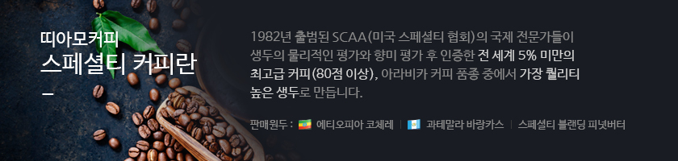
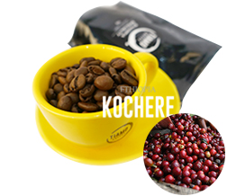
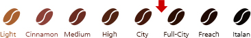
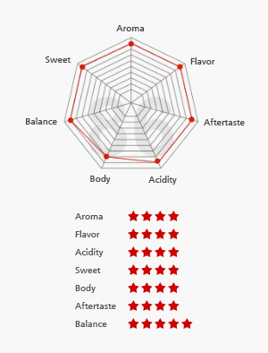
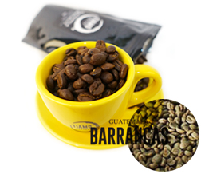
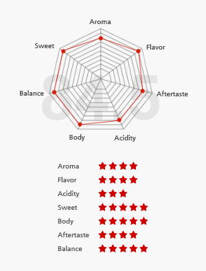
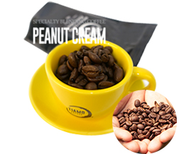
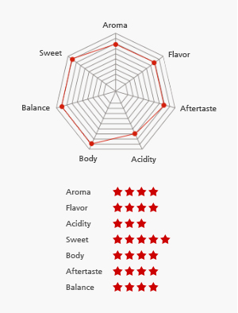

프리미엄 스페셜티 커피


베리류의 과일의 향미를 지니면서 입안을 가득 채우는 벨벳같은 느낌의 바디감이 특징인 커피입니다. 과일의 향미 뒤에는 밀크 초콜릿같은 달콤한 후미가 남아 있으며, 복합적인 풍미의 조화가 좋습니다. 깨끗한 Aftertaste와 세련된 플로랄향을 동시에 느낄수 있습니다. 고지대 커피의 특징인 단단한 밀도와 고 품질의 유기산에서 발현된 싱그러운 과일의 산미가 개성적입니다.
기본제공량 : /
| 열량(Kcal) | 당류(g) | 단백질(g) | 포화지방(g) | 나트륨(mg) | 알레르기 유발성분 |
|---|---|---|---|---|---|
| 5 | 0 | 0 | 0 | 10 |
| Origin | Ethiopia |
|---|---|
| Region | near yirgacheffe / Kochere |
| Altitude | 1800 - 2200 meters |
| Variety | Kurumi. Walicho. Dega |
| Processing | Unwashed Natural |
| Quality | G1. 2013/14 crop |
| Screen Size | 12/13 up |
| Certificate | - |
| City-Full City |  균형 잡힌 강한 느낌을 준다. 맛과 향이 대체로 표준이며 풍부한 갈색을 띄게 된다. |


과테말라 산 마르코스 지역은 밀집도가 높은 정글산으로 비포장 도로를 통해 출입이 가능한 곳에서 커피 가 재배되고 있습니다. 높은 해발 고도로 인해 열매의 성숙도 과정이 천천히 이루어지면서, 복합적인 풍미 를 지닌 과테말라만의 커피가 생산됩니다. 또한 이 지역은 중미 지역의 가장 높은 화산들이 교차되는 산 악지역으로 커피 재배에 최적의 토양조건을 갖추고 있습니다. 북쪽과 남쪽의 극적인 기후와 고도의 차이 로 밀도가 높은 고품질의 개성있는 커피가 생산됩니다. 살구류의 화사한 산미와 갓 구운 신선한 빵과 같은 아로마, 입안을 감도는 실크같은 부드러운 바디감이 특징입니다.
기본제공량 : /
| 열량(Kcal) | 당류(g) | 단백질(g) | 포화지방(g) | 나트륨(mg) | 알레르기 유발성분 |
|---|---|---|---|---|---|
| 5 | 0 | 0 | 0 | 10 |
| Origin | Guatemala |
|---|---|
| Region | Barrancus de Garbes, in San Marcos Province |
| Altitude | 1300 - 1800 meters |
| Variety | Mainly Bourbon |
| Processing | Fully Washed |
| Quality | SHB. 2014 crop |
| Screen Size | 12/13 up |
| Certificate | - |
| City-Full City | 균형 잡힌 강한 느낌을 준다. 맛과 향이 대체로 표준이며 풍부한 갈색을 띄게 된다. |


PEANUT CREAM 블렌딩은 세계 커피 생산량 1위를 차지하고 있는 브라질 스페셜티를 베이스로 사용하 고 있습니다. 단맛과 바디감의 깊이를 더 함에 있어, 빠질수없는 산지로서, BSCA에서 수차례 수상과 인증 경력이 있는 농장의 커피만을 사용합니다. 여기에, 깨끗한 맛을 주는 washed 가공방식의 콜롬비아 스페 셜티 커피가 블렌딩의 완성도를 높여줍니다. 콜롬비아 커피는 "마일드커피"의 대명사로서, 한국인의 입 맛에 친숙한 커피입니다. 블렌딩에 사용되는 콜롬비아 커피는 안데스의 높은 고산지대에서 생산되며, 그 중 Tolima 지역의 커피입니다. 토리마 지역은 콜롬비아 커피 생산자 협회의 철저한 감독하에 매년 일정하 고 높은 품질의 커피를 생산해 전세계 여러나라에서 사랑받고 있는 특별하면서도 대중적인 커피입니다. 한국사람들의 입맛에 가장 익숙하고, 친숙한 산지들의 블렌딩으로 편안함 속에 깊고도 충만한 특별함을 느낄수 있는 블렌딩입니다.
기본제공량 : /
| 열량(Kcal) | 당류(g) | 단백질(g) | 포화지방(g) | 나트륨(mg) | 알레르기 유발성분 |
|---|---|---|---|---|---|
| 5 | 0 | 0 | 0 | 10 |
| City-Full City | 균형 잡힌 강한 느낌을 준다. 맛과 향이 대체로 표준이며 풍부한 갈색을 띄게 된다. |
|---|
